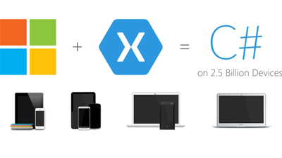

Mobile applications future
Mobile app development is a fast growing industry. As the number of mobile and smart phones
increases day by day, businesses are developing innovative mobile apps to attract the target
audience.
Mobile app development is ideally suited for small and large businesses. You can easily keep the
clients engaged and interested when you use mobile apps for business.
Cross platform mobile apps are the need to time. Whether the user is an Android fan or Apple fan, he
can access your application and use it. You can reach a larger audience when you opt for cross
platform mobile app development.
The gap between the customers and business owners get reduced when businesses develop mobile apps to
boost their sales. As mobile apps grant businesses with several advantages, you should develop
excellent apps for the users that offer a great experience while they use them.
There is no doubt that the future of mobile app development is very bright. It is a good idea to
develop cross platform mobile apps in order to reach a larger audience. Rather than developing an
app for Android, go for a native mobile app that works well on all the mobile platforms. Hence, you
should look for a developer who can create apps for all the different types of mobile platform.
The overall design and user interface of the mobile app should attract the targeted users. For
example:
If you are developing an app for tattooing, it should have a funky look while if you develop a
business app, it should have simple and professional interface.
If you are developing an app for the first time for your business, you should think of some unique
idea and look for an expert mobile app developer who can help you convert your ideas into reality.
No matter what mobile app you develop, it is important that your app should make people’s lives
easier.
C# and Windows Phone
Windows Phone (WP) is a family of mobile operating systems developed by Microsoft for smartphones as
the replacement successor to Windows Mobile and Zune. Windows Phone features a new user
interface derived from Metro design language. Unlike Windows Mobile, it is primarily aimed at the
consumer market rather than the enterprise market. It was first launched in October 2010 with
Windows Phone 7.
Windows Phone 8.1 is the latest public release of the operating system, released to manufacturing on
April 14, 2014.
The Windows Phone brand was phased out in accordance to Microsoft's new branding strategy and is due
to be succeeded in 2015 with the release of Windows 10 (mobile), which is designed to provide a
universal experience in conjunction with the PC version of Windows 10.

Third party applications and games for Windows Phone can be based on XNA, a Windows Phone-specific
version of Silverlight, the GUI-based Windows Phone App Studio, or the Windows Runtime, which allows
developers to develop an app for the both the Windows Store and Windows Phone Store
simultaneously. App developers can develop apps using C# / Visual Basic.NET (.NET), C++
(CX) or HTML5/Javascript.
For Windows Phone apps to be designed and tested within Visual Studio or Visual Studio Express,
Microsoft offers Windows Phone Developer Tools, which run only on Windows Vista SP2 and later, as an
extension Microsoft also offers Expression Blend for Windows Phone for free. On November 29,
2009, Microsoft announced the Release to web (RTW) version of its Visual Basic .NET Developer Tool,
to aid development of Windows Phone apps in Visual Basic.
Later versions of Windows Phone support the running of managed code through a Common Language
Runtime similar to that of the Windows operating system itself as opposed to the .NET Compact
Framework. This, along with support for native C and C++ libraries, allows some traditional Windows
desktop programs to be easily ported to Windows Phone.
Java and Android
Android is a mobile operating system (OS) based on the Linux kernel and currently developed by Google.Android is popular with technology companies which require a ready-made, low-cost and customizable operating system for high-tech devices. Android's open nature has encouraged a large community of developers and enthusiasts to use the open-source code as a foundation for community-driven projects, which add new features for advanced users or bring Android to devices which were officially released running other operating systems. The operating system's success has made it a target for patent litigation as part of the so-called "smartphone wars" between technology companies.
Android development is hot, and many programmers are interested in joining the fun. However, because this technology is based on Java, you should first obtain a solid grasp of the Java language and its foundational APIs to improve your chances of succeeding as an Android app developer. After all, you will be busy learning the architecture of an Android app, the various Android-specific APIs, and Android-specific tools. If you do not already know Java fundamentals, you will probably end up with a massive headache from also having to quickly cram those fundamentals into your knowledge base.
Xamarin and mobile development
The mobile world is changing. When your business discovers a need to have a mobile app to run across
major platforms and devices, there is a dilemma that you face – Native or cross-platform?
Of course, if you favor one specific platform for your app to live in, the traditional “Build Apps
Natively” approach will work perfectly for you. However, if you consider all 3 major platforms for
your app development, then you have to build each app exclusively for iOS, Android, or Windows
individually, so you need to have multiple codebases and hire a large team of developers for each
platform. It usually delays the completion of all 3 apps, making you prioritize the platform to
start with, hoping that other 2 will catch up later on, etc. Finally, this slows down or even
prevents the innovation of new features since developers are focused more on platform-specific
issues rather than on developing new features, building user experience, and making the app fun to
use.
Another way you can handle the same assignment is “Write-Once-Run-Anywhere” approach, which is
famous for it’s poor user experience, not complete API coverage, and high abandonment rates. Several
hybrid Mobile App Frameworks such as Apache Cordova (ex PhoneGap), Appcelerator Titanium, Kendo
Mobile and other could help you with cross-platform app development but there are certain serious
disadvantages that prevent your app from being popular among users.
Did you know that you don’t have to choose between the platforms anymore? Being experts at building
cross-platform mobile applications for all major platforms – iOS, Android and Windows, our software
developers at EastBanc Technologies believe that today the entirely new approach is the way to go.
And that is – using Xamarin development environment and C#.
Here are our 10 reasons for Xamarin IT:
- Xamarin is a world-class development environment for cross-platform mobile apps. Using Xamarin with Visual Studio or Xamarin Studio you are getting all the advantages of modern and powerful IDEs, which helps to boost a development process and simplify development and support process.
- Xamarin delivers high performance compiled code with full access to all the native APIs so you can create native apps with device-specific experiences. Anything you can do in Objective-C or Java, can be done in C# with Xamarin: 
- Using Xamarin technology allows you to keep Native UI across all three platforms, therefor preserving Native Performance while enjoying full API coverage, shared codebase and application logic. It also allows for re-using skills, teams, tools and most importantly – the CODE! Needless to say, it saves you time and resources.
- Xamarin is integrated with SDKs of all of the different operating systems. You have the ability to utilize native controls that exist for the iPad, Android or Windows but only coded once. Linked files, conditional compilation, and portable class libraries make it possible for developers to share the code. The ability to reuse 60-80% of the code cuts the development time in half. That obviously saves time money to both customers and service providing companies on the app’s multi-channel distribution. Additionally, a single codebase dramatically reduces costs for support and new features introduction.
- Xamarin.Android supports Google Glass devices. That is a great opportunity for developers to innovate with Xamarin. By using Xamarin, the Android SDK and GDK, you can leverage the array of Xamarin and Android APIs and also design a great experience for Glass. Glass Development Kit at the Component Store
- Windows Phone and Windows 8 development is natively supported by Visual Studio, and Xamarin is not involved here. You can share your code between iOS, Android and Windows using Portable Class Libraries and proper application architecture.
- Xamarin TestCloud allows you to automatically test your iOS and Android apps immediately, on hundreds of devices, offering continuous integration, beautiful reports, test for fragmentation, and object-based UI testing.
- Xamarin allows building applications on C# and here are some reasons why C# is good for that: it
is a simple, modern, general-purpose, object-oriented programming language. You can leverage all
the power of strong typed language, lambdas, LINQ, async programming:
- Language integrated queries make it even more powerful. LINQ introduces standard, easily-learned patterns for querying and updating data, and the technology can be extended to support potentially any kind of data store. Visual Studio includes LINQ provider assemblies that enable the use of LINQ with .NET Framework collections, SQL Server databases, ADO.NET Datasets, and XML documents.
- The most powerful way to do parallel work is using Microsoft Task Parallel Library (TPL) and Xamarin supports it. The purpose of the TPL is to make developers more productive by simplifying the process of adding parallelism and concurrency to applications. Parallelism is crucial for responsive mobile application user interfaces. Unfortunately, existing approaches with callbacks and synchronization make the code less readable, complicated and confusing. Conversely, with the TPL you can focus on business logic and let the framework deal with an asynchronous code. In addition, the TPL handles partitioning of work, scheduling of threads on the ThreadPool, cancellation support, state management, and other low-level details.
- You can use C# syntax to develop async code in a nice and clean way. Look how simple it can be:
- Today, nearly 500,000 developers are already using Xamarin to create amazing apps. And here are the companies that are taking advantage of Xamarin today:
- Here is what a Vice President of Microsoft Corporation S. Somasegar sais about Xamarin:
“The broad collaboration between Microsoft and Xamarin is targeted at supporting developers interested in extending their applications across multiple devices. With Xamarin, developers combine all of the productivity benefits of C#, Visual Studio 2013 and Windows Azure with the flexibility to quickly build for multiple device targets.”
To sum it up, with Xamarin, you write your apps entirely in C#, sharing the same code on iOS, Android, Windows and Mac. Reuse your favorite .NET libraries, and still easily incorporate platform-specific libraries and frameworks when you want to. You produce fast, modern, reliable user-friendly apps faster and more cost effectively.